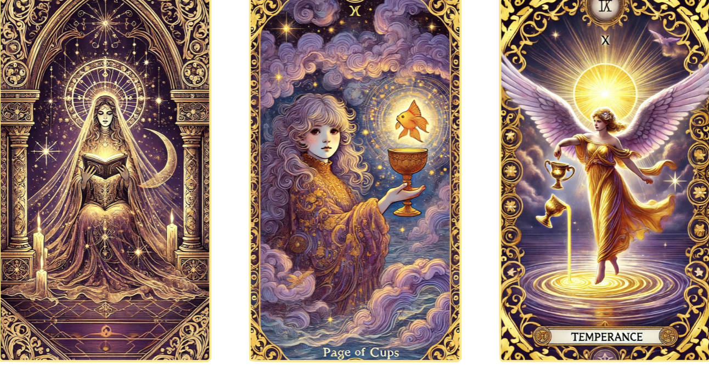
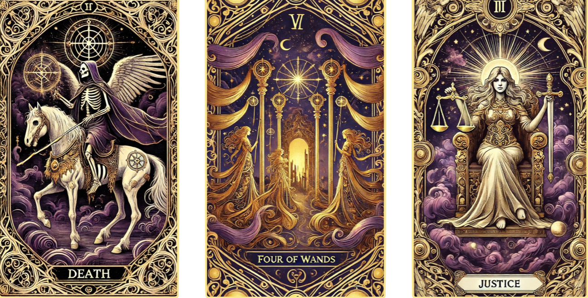

read my tarot
Feeling uncertain? Draw a card and discover your fate.

Tarot is a powerful tool for self-reflection, guidance, and insight. Whether you're seeking clarity on a situation or looking for a new perspective, this reading will help illuminate the path ahead.
How it Works
- Set Your Intention: Take a deep breath and focus on the question or situation you would like guidance on.
- Pick 3 Cards: Trust your intuition as you click to reveal them.
- Interpretation: Once you have chosen your cards, click the "Interpret my Cards" button to see their meanings and how they apply to your past, present, and future.

A few tips
🔮 There are no "wrong" cards, each one has a message meant for you.
🌙 Keep an open mind and trust the insights you receive.
🌟 If you do not have a specific question, focus on general guidance for your journey.